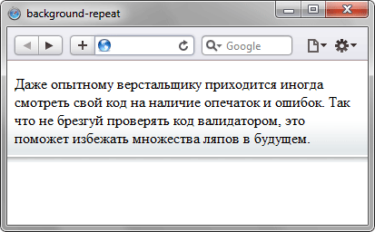

Определяет,
как будет повторяться
фоновое изображение,
установленное с помощью
свойства background-image.
Можно установить
повторение рисунка
только по горизонтали,
по вертикали
или в обе стороны.
В CSS3 допустимо
указывать несколько значений
для каждого фона,
перечисляя значения
через запятую.
Синтаксис CSS2.1
background-repeat:
no-repeat |
repeat |
repeat-x |
repeat-y |
inherit
Синтаксис CSS3
background-repeat:
<повторение>
[ , <повторение> ]*
no-repeat —
устанавливает одно фоновое изображение
без повторений.
repeat —
изображение повторяется
по горизонтали и вертикали.
repeat-x —
повторение только по горизонтали.
repeat-y —
повторение только по вертикали.
inherit —
наследует значение родителя.
space —
изображения повторяются
с добавлением пустого пространства.
round —
изображения масштабируются,
чтобы поместилось целое число рисунков.
Пример 1:
<!DOCTYPE html PUBLIC
"-//W3C//DTD XHTML 1.0 Strict//EN"
"http://www.w3.org/TR/xhtml1/
DTD/xhtml1-strict.dtd">
<html xmlns=
"http://www.w3.org/1999/xhtml">
<head>
<meta http-equiv="Content-Type"
content="text/html;
charset=utf-8" />
<title>background-repeat</title>
<style type="text/css">
body {
background-image:
url(images/bg_grey.png);
background-position:
left bottom;
background-repeat:
repeat-x;
}
</style>
</head>
<body>
<p>
Даже опытному верстальщику
приходится иногда смотреть
свой код на наличие опечаток
и ошибок.
</p>
</body>
</html>

Пример 2:
<!DOCTYPE html>
<html>
<head>
<meta charset="utf-8">
<title>background-repeat</title>
<style>
body {
background-image:
url(images/pattern-left.png),
url(images/pattern-right.png);
background-position:
left, right;
background-repeat:
repeat-y, repeat-y;
}
</style>
</head>
<body>
<div style="height:2000px">
</div>
</body>
</html>